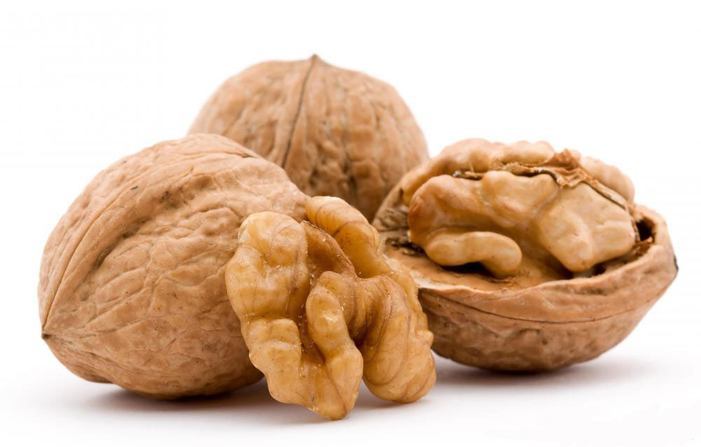

호두(WALNUT)
호두는 가래나무속에 속하는 나무에서 얻어진 견과이다. 호두는 다량의 단백질과 많은 땅콩과 필수 지방산을 포함하고 있다.호두의 특징
호두는 둥굴고 껍질을 까면 사람의 뇌처럼 생긴 씨앗이 있다. 호두는 하나의 씨만을 가지고 있는 핵과이다. 호두나무는 주로 성숙한 호두나무 열매의 씨를 사용하기 위해 사용된다. 열매는 3가지 층을 가지고 있으며, 열매는 성숙을 거치면서 외각의 과육이 부서지기 쉽게, 내부의 껍질은 단단하게 된다. 호두의 갈색 껍질은 항산화물질을 가지고 있으며, 이것으로 내부의 씨앗을 대기의 산소로 인한 산패를 방지한다.

(호두 이미지)
(호두 이미지)
호두의 효능
호두에는 뇌세포를 보호하는 오메가3가 풍부해 치매, 노안 예방과 불면증, 건망증 치료에 효과적이며,호두의 단백질과 불포화지방산 비타민E 성분은 혈중 콜레스테롤을 낮추고 동맥경화 진행을 억제한다.노화 방지에도 도움이 되며, 호두 속 단백질과 비타민 B1, B2는 소화기능을 강화시킨다.